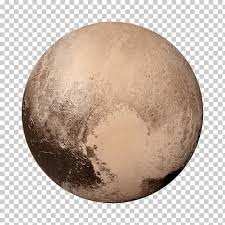

Plutón, designado (134340) Pluto, es un planeta enano del sistema solar situado a continuación de la órbita de Neptuno. Su nombre se debe al dios mitológico romano Plutón (Hades según la mitología griega). En la Asamblea General de la Unión Astronómica Internacional celebrada en Praga el 24 de agosto de 2006 se creó una nueva categoría llamada plutoide, en la que se incluye a Plutón. Es también el prototipo de una categoría de objetos transneptunianos denominada plutinos. Plutón posee una órbita excéntrica y altamente inclinada con respecto a la eclíptica, que recorre acercándose en su perihelio hasta el interior de la órbita de Neptuno. Asimismo posee también cinco satélites: Caronte, Nix, Hidra, Cerbero y Estigia,34 los cuales son cuerpos celestes que comparten esa misma categoría. Su gran distancia al Sol y a la Tierra, unida a su reducido tamaño, impide que brille por encima de la magnitud 13,8 en sus mejores momentos (perihelio orbital y oposición), por lo cual solo puede ser apreciado con telescopios a partir de los 200 mm de abertura, fotográficamente o con cámara CCD. Incluso en sus mejores momentos aparece como astro puntual de aspecto estelar, amarillento, sin rasgos distintivos (diámetro aparente inferior a 0,1 segundos de arco). No fue hasta el año 2015 cuando la sonda espacial New Horizons pasó sobre el planeta y permitió apreciar por primera vez de forma nítida su aspecto real.
Haz click aquí si deseas volver a la página principal.
© 2021 Humberto Alejandro Ortega Alcocer - 2CV14 - ESCOM, IPN